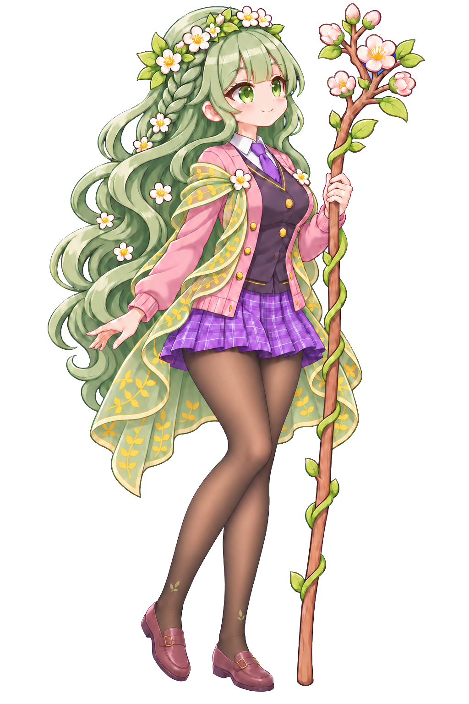

플로라 · 적용용 PNG

flora_full · 1024×1536
flora_bust · 1024×900
flora_bust_happy · 1024×900
flora_bust_surprised · 1024×900
 flora_cutin · 1672×941
flora_cutin_cut · 1672×941
flora_sd_idle · 557×659
flora_sd_attack · 930×651
flora_face · 160×160
flora_cutin · 1672×941
flora_cutin_cut · 1672×941
flora_sd_idle · 557×659
flora_sd_attack · 930×651
flora_face · 160×160